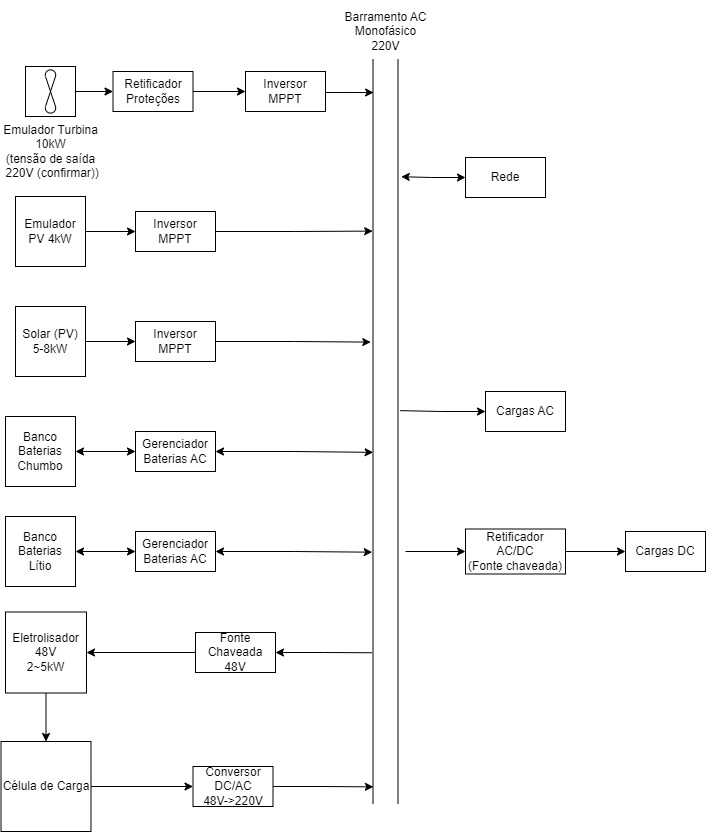

Laboratório Multiusuário do INCT CAPE recebe apoio da Fapesc
O Laboratório Multiusuário do INCT-CAPE permitirá desenvolver, investigar e testar uma ampla variedade de tecnologias de engenharia relacionadas à geração de energia renovável e ao despacho de energia por redes inteligentes (microrredes). As diferentes camadas hierárquicas de esquemas de (controle e) automação são consideradas neste ambiente de teste, incluindo gerenciamento de energia ilhado e modos conectados à rede, por exemplo.
Na Figura abaixo, incluímos uma representação esquemática da rede inteligente do Laboratório Multiusuário. O sistema contempla as seguintes características: (1) Barramento CA monofásico de 220 V; (2) Ligação à rede de distribuição CA monofásica; (3) Múltiplas cargas AC – usadas para emular diferentes perfis de demanda de energia; (4) Retificadores AD/DC - que atuam como fonte para as cargas DC; (5) Um eletrolisador de 1kW para geração de hidrogênio (verde); (6) Uma célula de combustível conectada diretamente ao barramento CA através de um inversor CC/CA; (7) Diversas baterias (banco de baterias), utilizadas para armazenar energia e diluir as flutuações de geração de energia, conectadas ao barramento CA através de conversores individuais; (8) Dez módulos de painéis fotovoltaicos monocristalinos de 550 W cada (5,5 kW de potência nominal), para emular a geração de energia renovável; (9) Emulador de turbina eólica de 12 kW, com retificador e inversor individuais; e (10) Um inversor de potência híbrido trifásico de 380 V de 12 kW.
Dados todos esses elementos representados na Figura abaixo, o protótipo Laboratório Multiusuário compreende todas as funcionalidades de conversão de energia e geração renovável. Destacamos os principais aspectos deste sistema:
Um único inversor é usado para combinar vários subsistemas diferentes, por exemplo geradores fotovoltaicos e eólicos, baterias, cargas CA, outros inversores e até geradores de combustível. Além disso, o testbed compreende um sistema de monitoramento que permite visualizar, supervisionar e diagnosticar todas as variáveis (mais importantes) do sistema usando conexão de rede, configuração e ativação através de protocolos de comunicação específicos;
O Laboratório inclui uma forte característica renovável que é a produção e armazenamento de hidrogénio (verde). Em particular, para tal, são utilizados um eletrolisador e uma célula de combustível baseada na tecnologia de membrana polimérica de troca de prótons. Além disso, um tanque de armazenamento de hidrogênio baseado em tecnologia de hidreto metálico compõe o sistema para fornecer hidrogênio à célula de combustível por até sete horas no ponto nominal de operação. Em síntese, podem ser abordados vários casos de utilização, perfis de carga realistas e âmbitos de geração de hidrogénio;
Todos os equipamentos da bancada de testes são conectados a um CLP especificamente projetado, que tem como objetivo realizar as tarefas primárias de controle: medir as variáveis da microrrede, gerenciando assim toda a geração de energia e características de atendimento da demanda e supervisionando a operação da planta;
Em termos de recursos tecnológicos de engenharia, ressaltamos que o INCT-CAPE-Lab inclui um sistema SCADA que registra variáveis (armazena dados) e possui interface com o software Matlab. Em particular, este software pode ser utilizado para implementar técnicas avançadas de controle e otimização com facilidade (e alta capacidade de cálculo), o que permite testar diferentes algoritmos complexos das diferentes camadas de automação e controle. As saídas geradas no Matlab (e algoritmos implementados através da interface utilizada) são transmitidas ao CLP, que, por sua vez, implementa as estratégias localmente.
Enfatizamos que o Laboratório pode desempenhar um papel fundamental nas ações de extensão na Universidade e público geral. Em particular, visitas coordenadas – de estudantes locais, parceiros industriais e comunidades externas em geral – ao Laboratório, com exposições e seminários no local podem servir para estimular e promover o interesse em controle, automação, otimização e tópicos relacionados. Além disso, o Laboratório pode ser utilizado como uma interface para contribuir para um ensino de engenharia mais verde, baseado em práticas sustentáveis e orientado para objetivos renováveis. Além disso, o Laboratório permite promover cursos de graduação, mestrado e doutorado. pesquisa de tópicos de engenharia avançada totalmente baseados em ensaios experimentais realizados em ambiente de teste – combinando assim educação com pesquisa avançada em sistemas renováveis. A utilização do testbench numa perspectiva didáctica/educativa permite não só ilustrar os principais aspectos tecnológicos do projecto – tanto no âmbito do público em geral como do nível de engenharia avançada –, mas também como estes podem ser utilizados para – na prática e na realidade – beneficiar os cidadãos locais em termos de geração de energia limpa.
